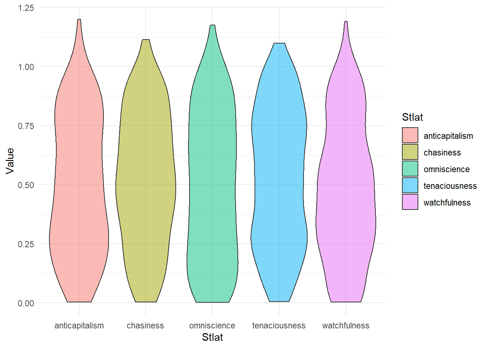
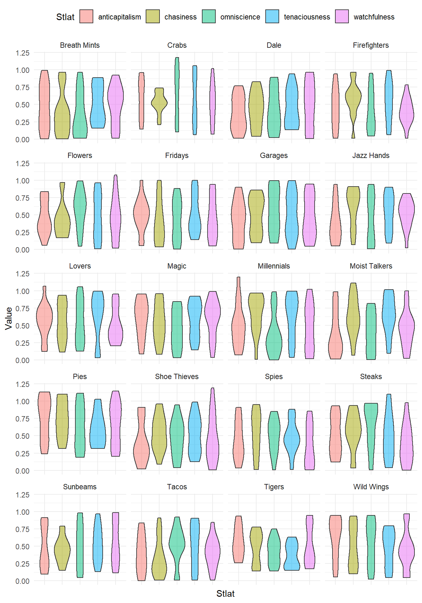
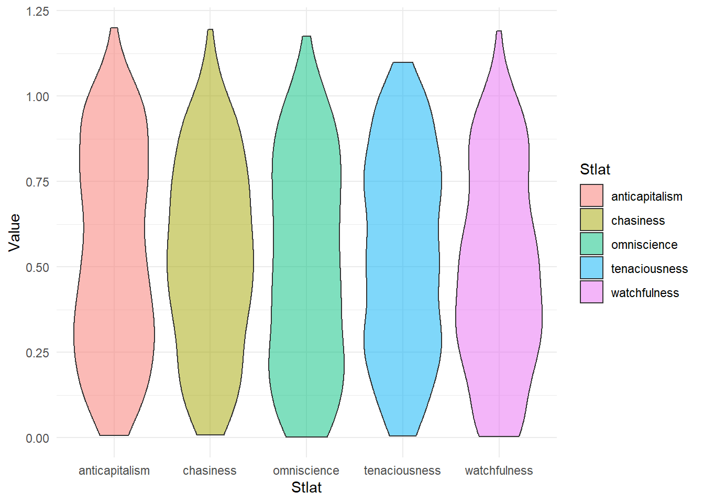
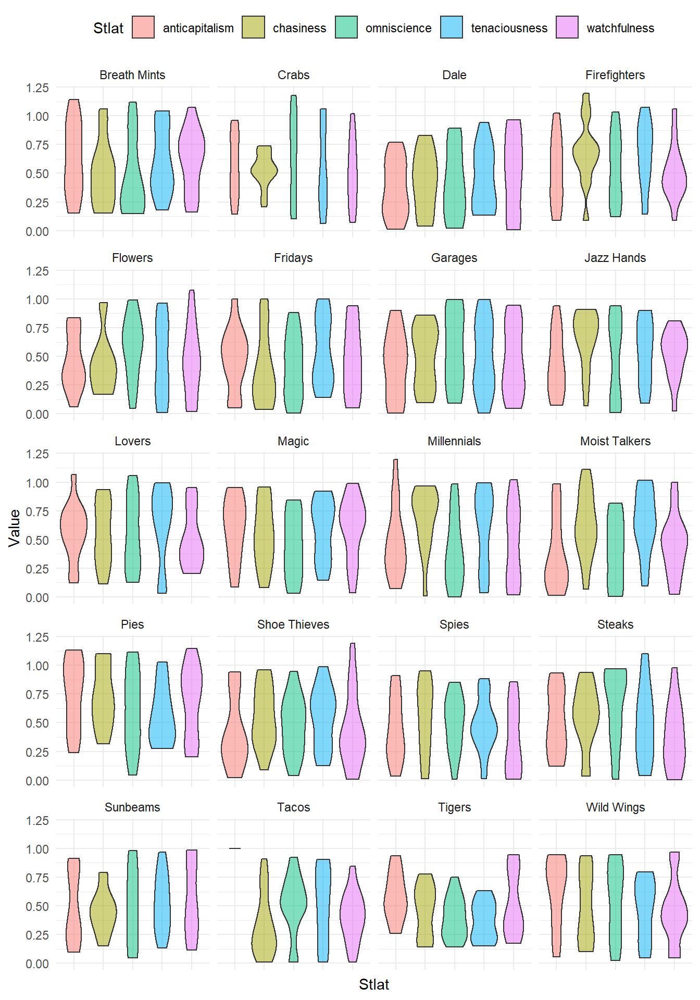
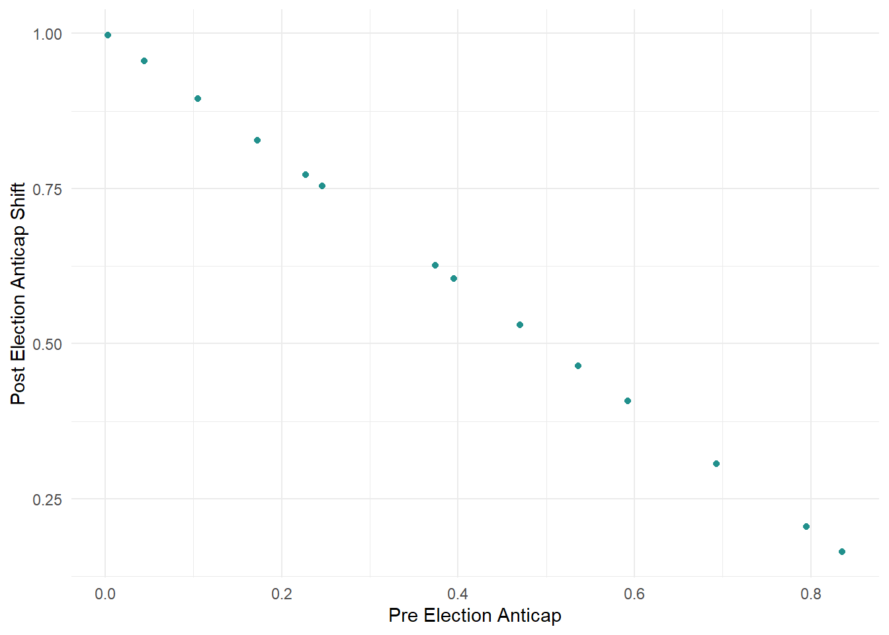

1 Defensive Stlats
Our adventure begins with the defense. This is because [REDACTED].
So… What are considered defensive stlats? Let’s make a list:
- anticapitalism
- chasiness
- omniscience
- tenacity
- watchfulness
I’ll leave the definitions up to you. But I will count for you. That is five variables. Defense is a pentad. Each of these variables is very important, because blaseball very is important.
1.1 General Distribution
Hello again! It has been so long since we last met. Do not let the heat get to you!
Let’s start digging into these variables.
1.1.1 Season 3: Pre-Election
I’ve only got good data for season 3 on the data shelf. So we’ll cook with that. The spices in it are very nice.
Let’s get some graphs. Because we can!
Let’s start off with some basic summary statistics:
## `summarise()` ungrouping output (override with `.groups` argument)| Stlat | Mean | Median | Std. Dev. | CV | Skew |
|---|---|---|---|---|---|
| anticapitalism | 0.4959219 | 0.4817769 | 0.2927142 | 0.5902426 | 0.1551667 |
| chasiness | 0.5207366 | 0.5202670 | 0.2798555 | 0.5374224 | -0.0088088 |
| omniscience | 0.4922804 | 0.4946862 | 0.3103572 | 0.6304480 | 0.0916586 |
| tenaciousness | 0.5274485 | 0.5233301 | 0.2884562 | 0.5468899 | 0.0053958 |
| watchfulness | 0.4793531 | 0.4597488 | 0.2915361 | 0.6081865 | 0.1779279 |
Well… Not much excitement here… They all have VERY similar distributions. I wonder if it’s like that with all these stlats boiling around in blaseball. We’ll find out on our adventure!
Essentially, they all are centered at approximately 0.5, and they all have the same approximate spread. The skewness indicates that they are all symmetric too!
Lets take a look!
 If you haven’t seen these before. These are violin plots. For some reason, people decided that this is a good plot. I don’t really care but I’ll trust “those people” (whoever the hades they are). Basically, it is like a boxplot (if you don’t what that is… You should probably stop reading a chapter ago), but it has more detail. Wider parts mean more players have stlats in that range and skinnier parts mean fewer.
What’d be cool is if there were some meaningful difference between the different stlats, but there isn’t much. You want some hypothesis test for that. Okay. I did it. There is a p-value or what not. It’s pretty small because large sample size. Anyway, I’ll save you the trouble. This is BORING.
But wait… we have a lot of teams!

Oh thank Hades. There’s a lot here, and I really don’t care about the teams, or the money, or the votes. Sure I chose the Tigers as my team, but I did that just because I like Tartarus. It’s a nice place.
Anyway, you can compare the teams. There’s a lot of differences. or similarities or whatever. Check out Dale[ACCENT ERROR], they are boring. It’s all the same. But the Firefights… Look at that chasiness. It’s so dreamy.
Look at it whatever.
Here are the numbers…
| team | Stlat | Mean | Median | Std. Dev. | CV | Skew |
|---|---|---|---|---|---|---|
| Breath Mints | anticapitalism | 0.4627438 | 0.4657024 | 0.3289517 | 0.7108721 | 0.0604500 |
| Breath Mints | chasiness | 0.3768264 | 0.3295325 | 0.3204211 | 0.8503147 | 0.5993580 |
| Breath Mints | omniscience | 0.3537627 | 0.2683630 | 0.3280403 | 0.9272891 | 0.5160515 |
| Breath Mints | tenaciousness | 0.5126339 | 0.4799804 | 0.2726546 | 0.5318700 | 0.1673924 |
| Breath Mints | watchfulness | 0.4905436 | 0.5698160 | 0.2866478 | 0.5843472 | -0.2992189 |
| Crabs | anticapitalism | 0.5865952 | 0.6370388 | 0.2837951 | 0.4838005 | -0.1431542 |
| Crabs | chasiness | 0.5301729 | 0.5242458 | 0.1526183 | 0.2878652 | -0.4743889 |
| Crabs | omniscience | 0.6473348 | 0.7073562 | 0.3884678 | 0.6001033 | -0.1469466 |
| Crabs | tenaciousness | 0.5829373 | 0.5044924 | 0.3685620 | 0.6322499 | 0.0272157 |
| Crabs | watchfulness | 0.5234717 | 0.5166114 | 0.2841827 | 0.5428806 | 0.0058625 |
| Dale | anticapitalism | 0.3731316 | 0.3387787 | 0.2478423 | 0.6642223 | 0.1372807 |
| Dale | chasiness | 0.4250536 | 0.4315548 | 0.2621973 | 0.6168570 | -0.0766962 |
| Dale | omniscience | 0.4214213 | 0.3973689 | 0.3059891 | 0.7260884 | 0.2438656 |
| Dale | tenaciousness | 0.4559173 | 0.4234648 | 0.2722345 | 0.5971138 | 0.2469650 |
| Dale | watchfulness | 0.4837035 | 0.5221185 | 0.3569923 | 0.7380396 | -0.1010190 |
| Firefighters | anticapitalism | 0.4517997 | 0.4432632 | 0.3011648 | 0.6665892 | 0.0502458 |
| Firefighters | chasiness | 0.5804227 | 0.6156040 | 0.2440119 | 0.4204038 | -0.5321613 |
| Firefighters | omniscience | 0.4261869 | 0.3561045 | 0.3129745 | 0.7343598 | 0.4106341 |
| Firefighters | tenaciousness | 0.5447445 | 0.5667437 | 0.3016215 | 0.5536935 | -0.1505008 |
| Firefighters | watchfulness | 0.4018940 | 0.3898984 | 0.1947373 | 0.4845489 | 0.0304242 |
| Flowers | anticapitalism | 0.4628304 | 0.3649425 | 0.2507988 | 0.5418805 | 0.2458171 |
| Flowers | chasiness | 0.4408037 | 0.3739497 | 0.2573872 | 0.5839044 | 0.8940105 |
| Flowers | omniscience | 0.5774146 | 0.6222510 | 0.2749845 | 0.4762340 | -0.3323041 |
| Flowers | tenaciousness | 0.4737641 | 0.4445346 | 0.3443009 | 0.7267349 | 0.0459455 |
| Flowers | watchfulness | 0.4522328 | 0.4441844 | 0.3199718 | 0.7075379 | 0.2529272 |
| Fridays | anticapitalism | 0.5101125 | 0.5153098 | 0.2458238 | 0.4819012 | -0.0310397 |
| Fridays | chasiness | 0.4105390 | 0.3243951 | 0.3231506 | 0.7871374 | 0.4970563 |
| Fridays | omniscience | 0.4339885 | 0.4851602 | 0.2959862 | 0.6820137 | 0.0051201 |
| Fridays | tenaciousness | 0.5155130 | 0.4256691 | 0.2900275 | 0.5625997 | 0.4284760 |
| Fridays | watchfulness | 0.4500983 | 0.3641108 | 0.3108673 | 0.6906655 | 0.3023248 |
| Garages | anticapitalism | 0.4240209 | 0.4508044 | 0.2884726 | 0.6803262 | 0.0314172 |
| Garages | chasiness | 0.4973159 | 0.5369407 | 0.2679212 | 0.5387345 | -0.1394636 |
| Garages | omniscience | 0.5645431 | 0.5399343 | 0.3300986 | 0.5847181 | -0.0444719 |
| Garages | tenaciousness | 0.4963738 | 0.4365298 | 0.3186250 | 0.6419053 | 0.0885326 |
| Garages | watchfulness | 0.4765438 | 0.4236365 | 0.3098236 | 0.6501473 | 0.1750700 |
| Jazz Hands | anticapitalism | 0.3857681 | 0.3308927 | 0.2805922 | 0.7273597 | 0.5206113 |
| Jazz Hands | chasiness | 0.6251920 | 0.7264935 | 0.2792008 | 0.4465840 | -0.6930604 |
| Jazz Hands | omniscience | 0.4390531 | 0.4497790 | 0.3634437 | 0.8277899 | 0.0170892 |
| Jazz Hands | tenaciousness | 0.5378237 | 0.5568637 | 0.2686430 | 0.4995001 | -0.2166518 |
| Jazz Hands | watchfulness | 0.5154483 | 0.5500311 | 0.2102776 | 0.4079509 | -0.6880679 |
| Lovers | anticapitalism | 0.5661568 | 0.5932398 | 0.2511247 | 0.4435603 | -0.1077985 |
| Lovers | chasiness | 0.5588600 | 0.5177308 | 0.2758491 | 0.4935925 | -0.0456296 |
| Lovers | omniscience | 0.5490002 | 0.5346924 | 0.3172285 | 0.5778295 | 0.1759853 |
| Lovers | tenaciousness | 0.6284434 | 0.7236178 | 0.3426001 | 0.5451566 | -0.6960243 |
| Lovers | watchfulness | 0.5049051 | 0.4398743 | 0.2536488 | 0.5023692 | 0.5289100 |
| Magic | anticapitalism | 0.6026119 | 0.6521560 | 0.2745343 | 0.4555740 | -0.3964286 |
| Magic | chasiness | 0.5443875 | 0.5374024 | 0.2821661 | 0.5183185 | 0.0284304 |
| Magic | omniscience | 0.4467380 | 0.4379017 | 0.2791912 | 0.6249551 | 0.0041282 |
| Magic | tenaciousness | 0.5838722 | 0.6676153 | 0.2641354 | 0.4523857 | -0.2452459 |
| Magic | watchfulness | 0.6008025 | 0.6662076 | 0.2761483 | 0.4596325 | -0.5372048 |
| Millennials | anticapitalism | 0.5063591 | 0.4795331 | 0.3182283 | 0.6284637 | 0.5765196 |
| Millennials | chasiness | 0.6661085 | 0.7897462 | 0.2799834 | 0.4203269 | -0.8175586 |
| Millennials | omniscience | 0.3731118 | 0.3073098 | 0.3052185 | 0.8180351 | 0.6809273 |
| Millennials | tenaciousness | 0.6142675 | 0.7106785 | 0.3286062 | 0.5349562 | -0.4837472 |
| Millennials | watchfulness | 0.4614770 | 0.4664855 | 0.3432358 | 0.7437766 | 0.0608211 |
| Moist Talkers | anticapitalism | 0.3851771 | 0.2031867 | 0.3235668 | 0.8400468 | 0.7033105 |
| Moist Talkers | chasiness | 0.6294982 | 0.6054889 | 0.2884321 | 0.4581936 | -0.1216490 |
| Moist Talkers | omniscience | 0.4023112 | 0.3976413 | 0.2937358 | 0.7301210 | -0.0132128 |
| Moist Talkers | tenaciousness | 0.6484181 | 0.6367718 | 0.2797679 | 0.4314621 | -0.3910551 |
| Moist Talkers | watchfulness | 0.4495096 | 0.4848952 | 0.2712156 | 0.6033589 | 0.2602166 |
| Pies | anticapitalism | 0.7546549 | 0.8273789 | 0.3114611 | 0.4127199 | -0.2988399 |
| Pies | chasiness | 0.7404004 | 0.7395118 | 0.2725409 | 0.3680993 | -0.0188648 |
| Pies | omniscience | 0.6283096 | 0.6175095 | 0.3321759 | 0.5286818 | 0.1020152 |
| Pies | tenaciousness | 0.5978504 | 0.5881310 | 0.2383529 | 0.3986832 | 0.4191913 |
| Pies | watchfulness | 0.6591560 | 0.7234512 | 0.3156489 | 0.4788682 | -0.0966565 |
| Shoe Thieves | anticapitalism | 0.4192364 | 0.3163904 | 0.3093897 | 0.7379837 | 0.5214326 |
| Shoe Thieves | chasiness | 0.5404362 | 0.5315368 | 0.2542957 | 0.4705378 | 0.1039233 |
| Shoe Thieves | omniscience | 0.4660923 | 0.4946322 | 0.2717837 | 0.5831113 | -0.0600397 |
| Shoe Thieves | tenaciousness | 0.5178678 | 0.5531788 | 0.2710612 | 0.5234177 | 0.1391021 |
| Shoe Thieves | watchfulness | 0.4591609 | 0.3517944 | 0.3504286 | 0.7631935 | 0.5466318 |
| Spies | anticapitalism | 0.4459065 | 0.3563817 | 0.2808998 | 0.6299521 | 0.2842880 |
| Spies | chasiness | 0.5402405 | 0.5850106 | 0.3180797 | 0.5887743 | -0.3219896 |
| Spies | omniscience | 0.5032657 | 0.5669464 | 0.2489390 | 0.4946472 | -0.3226793 |
| Spies | tenaciousness | 0.4830830 | 0.4588452 | 0.2388535 | 0.4944357 | -0.0606855 |
| Spies | watchfulness | 0.3474177 | 0.2556443 | 0.3070008 | 0.8836648 | 0.3012475 |
| Steaks | anticapitalism | 0.5029395 | 0.4692780 | 0.2867820 | 0.5702118 | 0.0996679 |
| Steaks | chasiness | 0.5607392 | 0.5765053 | 0.2745817 | 0.4896780 | -0.5497725 |
| Steaks | omniscience | 0.6524358 | 0.8418075 | 0.3378799 | 0.5178746 | -0.6812493 |
| Steaks | tenaciousness | 0.4950491 | 0.4934436 | 0.3291055 | 0.6647937 | 0.3091583 |
| Steaks | watchfulness | 0.3843145 | 0.3277542 | 0.2881429 | 0.7497581 | 0.4326161 |
| Sunbeams | anticapitalism | 0.4959079 | 0.3472951 | 0.3195875 | 0.6444494 | 0.1877864 |
| Sunbeams | chasiness | 0.4541614 | 0.4491326 | 0.1913404 | 0.4213049 | 0.2774299 |
| Sunbeams | omniscience | 0.4951642 | 0.4633976 | 0.3425742 | 0.6918396 | 0.0631101 |
| Sunbeams | tenaciousness | 0.5252013 | 0.5056566 | 0.2547300 | 0.4850141 | 0.1761893 |
| Sunbeams | watchfulness | 0.5551209 | 0.4982756 | 0.3298833 | 0.5942549 | 0.1329672 |
| Tacos | anticapitalism | 0.3922257 | 0.3847157 | 0.2730325 | 0.6961107 | 0.1708833 |
| Tacos | chasiness | 0.3329606 | 0.2269368 | 0.2729953 | 0.8199027 | 0.7659452 |
| Tacos | omniscience | 0.5059029 | 0.5330355 | 0.2673339 | 0.5284292 | -0.5178149 |
| Tacos | tenaciousness | 0.5025965 | 0.5073152 | 0.3224187 | 0.6415061 | -0.2242328 |
| Tacos | watchfulness | 0.4107530 | 0.4112978 | 0.2228577 | 0.5425589 | 0.0588774 |
| Tigers | anticapitalism | 0.5599191 | 0.5127639 | 0.2274826 | 0.4062777 | 0.2320806 |
| Tigers | chasiness | 0.4709423 | 0.5423329 | 0.2370573 | 0.5033681 | -0.2762458 |
| Tigers | omniscience | 0.4210158 | 0.4362219 | 0.1873253 | 0.4449365 | 0.0745264 |
| Tigers | tenaciousness | 0.3603748 | 0.3303539 | 0.1750273 | 0.4856812 | 0.2191015 |
| Tigers | watchfulness | 0.5074445 | 0.4055595 | 0.2909860 | 0.5734341 | 0.3715548 |
| Wild Wings | anticapitalism | 0.6303408 | 0.7101705 | 0.3001300 | 0.4761393 | -0.6091481 |
| Wild Wings | chasiness | 0.4896707 | 0.4591720 | 0.3146680 | 0.6426114 | 0.1216734 |
| Wild Wings | omniscience | 0.5385562 | 0.6257964 | 0.3280785 | 0.6091815 | -0.2132406 |
| Wild Wings | tenaciousness | 0.4722375 | 0.5140176 | 0.2661355 | 0.5635629 | -0.3192785 |
| Wild Wings | watchfulness | 0.4530643 | 0.4127228 | 0.2746418 | 0.6061872 | 0.3249747 |
1.1.2 Season 3: Post-Election
Welp… I guess we can run through the same stuff for post-election results. It’ll probably be more important to show what’s changed…. But whatever. We’ll do that in a hot minute.
SUMMARY STATISTICS AGAIN
## `summarise()` ungrouping output (override with `.groups` argument)| Stlat | Mean | Median | Std. Dev. | CV | Skew |
|---|---|---|---|---|---|
| anticapitalism | 0.4959219 | 0.4817769 | 0.2927142 | 0.5902426 | 0.1551667 |
| chasiness | 0.5207366 | 0.5202670 | 0.2798555 | 0.5374224 | -0.0088088 |
| omniscience | 0.4922804 | 0.4946862 | 0.3103572 | 0.6304480 | 0.0916586 |
| tenaciousness | 0.5274485 | 0.5233301 | 0.2884562 | 0.5468899 | 0.0053958 |
| watchfulness | 0.4793531 | 0.4597488 | 0.2915361 | 0.6081865 | 0.1779279 |
IS IT EXCITING YET? No… But let’s make the same graph of the data because I copy and pasted the code, and I might as well stay consistent.

TEAMS DATA AGAIN!

What’s different? What did the blessings do!? I don’t know but it looks like the Firefighters’ chasiness got punched in the face, and the Dale[ACCENT ERROR] is still the most boring set of distributions I’ve seen…
Holy crap look at that anticapitalism for the Tacos. They got maxed out. Praise the Blaseball Gods.
AND MORE NUMBERS
| team | Stlat | Mean | Median | Std. Dev. | CV | Skew |
|---|---|---|---|---|---|---|
| Breath Mints | anticapitalism | 0.4627438 | 0.4657024 | 0.3289517 | 0.7108721 | 0.0604500 |
| Breath Mints | chasiness | 0.3768264 | 0.3295325 | 0.3204211 | 0.8503147 | 0.5993580 |
| Breath Mints | omniscience | 0.3537627 | 0.2683630 | 0.3280403 | 0.9272891 | 0.5160515 |
| Breath Mints | tenaciousness | 0.5126339 | 0.4799804 | 0.2726546 | 0.5318700 | 0.1673924 |
| Breath Mints | watchfulness | 0.4905436 | 0.5698160 | 0.2866478 | 0.5843472 | -0.2992189 |
| Crabs | anticapitalism | 0.5865952 | 0.6370388 | 0.2837951 | 0.4838005 | -0.1431542 |
| Crabs | chasiness | 0.5301729 | 0.5242458 | 0.1526183 | 0.2878652 | -0.4743889 |
| Crabs | omniscience | 0.6473348 | 0.7073562 | 0.3884678 | 0.6001033 | -0.1469466 |
| Crabs | tenaciousness | 0.5829373 | 0.5044924 | 0.3685620 | 0.6322499 | 0.0272157 |
| Crabs | watchfulness | 0.5234717 | 0.5166114 | 0.2841827 | 0.5428806 | 0.0058625 |
| Dale | anticapitalism | 0.3731316 | 0.3387787 | 0.2478423 | 0.6642223 | 0.1372807 |
| Dale | chasiness | 0.4250536 | 0.4315548 | 0.2621973 | 0.6168570 | -0.0766962 |
| Dale | omniscience | 0.4214213 | 0.3973689 | 0.3059891 | 0.7260884 | 0.2438656 |
| Dale | tenaciousness | 0.4559173 | 0.4234648 | 0.2722345 | 0.5971138 | 0.2469650 |
| Dale | watchfulness | 0.4837035 | 0.5221185 | 0.3569923 | 0.7380396 | -0.1010190 |
| Firefighters | anticapitalism | 0.4517997 | 0.4432632 | 0.3011648 | 0.6665892 | 0.0502458 |
| Firefighters | chasiness | 0.5804227 | 0.6156040 | 0.2440119 | 0.4204038 | -0.5321613 |
| Firefighters | omniscience | 0.4261869 | 0.3561045 | 0.3129745 | 0.7343598 | 0.4106341 |
| Firefighters | tenaciousness | 0.5447445 | 0.5667437 | 0.3016215 | 0.5536935 | -0.1505008 |
| Firefighters | watchfulness | 0.4018940 | 0.3898984 | 0.1947373 | 0.4845489 | 0.0304242 |
| Flowers | anticapitalism | 0.4628304 | 0.3649425 | 0.2507988 | 0.5418805 | 0.2458171 |
| Flowers | chasiness | 0.4408037 | 0.3739497 | 0.2573872 | 0.5839044 | 0.8940105 |
| Flowers | omniscience | 0.5774146 | 0.6222510 | 0.2749845 | 0.4762340 | -0.3323041 |
| Flowers | tenaciousness | 0.4737641 | 0.4445346 | 0.3443009 | 0.7267349 | 0.0459455 |
| Flowers | watchfulness | 0.4522328 | 0.4441844 | 0.3199718 | 0.7075379 | 0.2529272 |
| Fridays | anticapitalism | 0.5101125 | 0.5153098 | 0.2458238 | 0.4819012 | -0.0310397 |
| Fridays | chasiness | 0.4105390 | 0.3243951 | 0.3231506 | 0.7871374 | 0.4970563 |
| Fridays | omniscience | 0.4339885 | 0.4851602 | 0.2959862 | 0.6820137 | 0.0051201 |
| Fridays | tenaciousness | 0.5155130 | 0.4256691 | 0.2900275 | 0.5625997 | 0.4284760 |
| Fridays | watchfulness | 0.4500983 | 0.3641108 | 0.3108673 | 0.6906655 | 0.3023248 |
| Garages | anticapitalism | 0.4240209 | 0.4508044 | 0.2884726 | 0.6803262 | 0.0314172 |
| Garages | chasiness | 0.4973159 | 0.5369407 | 0.2679212 | 0.5387345 | -0.1394636 |
| Garages | omniscience | 0.5645431 | 0.5399343 | 0.3300986 | 0.5847181 | -0.0444719 |
| Garages | tenaciousness | 0.4963738 | 0.4365298 | 0.3186250 | 0.6419053 | 0.0885326 |
| Garages | watchfulness | 0.4765438 | 0.4236365 | 0.3098236 | 0.6501473 | 0.1750700 |
| Jazz Hands | anticapitalism | 0.3857681 | 0.3308927 | 0.2805922 | 0.7273597 | 0.5206113 |
| Jazz Hands | chasiness | 0.6251920 | 0.7264935 | 0.2792008 | 0.4465840 | -0.6930604 |
| Jazz Hands | omniscience | 0.4390531 | 0.4497790 | 0.3634437 | 0.8277899 | 0.0170892 |
| Jazz Hands | tenaciousness | 0.5378237 | 0.5568637 | 0.2686430 | 0.4995001 | -0.2166518 |
| Jazz Hands | watchfulness | 0.5154483 | 0.5500311 | 0.2102776 | 0.4079509 | -0.6880679 |
| Lovers | anticapitalism | 0.5661568 | 0.5932398 | 0.2511247 | 0.4435603 | -0.1077985 |
| Lovers | chasiness | 0.5588600 | 0.5177308 | 0.2758491 | 0.4935925 | -0.0456296 |
| Lovers | omniscience | 0.5490002 | 0.5346924 | 0.3172285 | 0.5778295 | 0.1759853 |
| Lovers | tenaciousness | 0.6284434 | 0.7236178 | 0.3426001 | 0.5451566 | -0.6960243 |
| Lovers | watchfulness | 0.5049051 | 0.4398743 | 0.2536488 | 0.5023692 | 0.5289100 |
| Magic | anticapitalism | 0.6026119 | 0.6521560 | 0.2745343 | 0.4555740 | -0.3964286 |
| Magic | chasiness | 0.5443875 | 0.5374024 | 0.2821661 | 0.5183185 | 0.0284304 |
| Magic | omniscience | 0.4467380 | 0.4379017 | 0.2791912 | 0.6249551 | 0.0041282 |
| Magic | tenaciousness | 0.5838722 | 0.6676153 | 0.2641354 | 0.4523857 | -0.2452459 |
| Magic | watchfulness | 0.6008025 | 0.6662076 | 0.2761483 | 0.4596325 | -0.5372048 |
| Millennials | anticapitalism | 0.5063591 | 0.4795331 | 0.3182283 | 0.6284637 | 0.5765196 |
| Millennials | chasiness | 0.6661085 | 0.7897462 | 0.2799834 | 0.4203269 | -0.8175586 |
| Millennials | omniscience | 0.3731118 | 0.3073098 | 0.3052185 | 0.8180351 | 0.6809273 |
| Millennials | tenaciousness | 0.6142675 | 0.7106785 | 0.3286062 | 0.5349562 | -0.4837472 |
| Millennials | watchfulness | 0.4614770 | 0.4664855 | 0.3432358 | 0.7437766 | 0.0608211 |
| Moist Talkers | anticapitalism | 0.3851771 | 0.2031867 | 0.3235668 | 0.8400468 | 0.7033105 |
| Moist Talkers | chasiness | 0.6294982 | 0.6054889 | 0.2884321 | 0.4581936 | -0.1216490 |
| Moist Talkers | omniscience | 0.4023112 | 0.3976413 | 0.2937358 | 0.7301210 | -0.0132128 |
| Moist Talkers | tenaciousness | 0.6484181 | 0.6367718 | 0.2797679 | 0.4314621 | -0.3910551 |
| Moist Talkers | watchfulness | 0.4495096 | 0.4848952 | 0.2712156 | 0.6033589 | 0.2602166 |
| Pies | anticapitalism | 0.7546549 | 0.8273789 | 0.3114611 | 0.4127199 | -0.2988399 |
| Pies | chasiness | 0.7404004 | 0.7395118 | 0.2725409 | 0.3680993 | -0.0188648 |
| Pies | omniscience | 0.6283096 | 0.6175095 | 0.3321759 | 0.5286818 | 0.1020152 |
| Pies | tenaciousness | 0.5978504 | 0.5881310 | 0.2383529 | 0.3986832 | 0.4191913 |
| Pies | watchfulness | 0.6591560 | 0.7234512 | 0.3156489 | 0.4788682 | -0.0966565 |
| Shoe Thieves | anticapitalism | 0.4192364 | 0.3163904 | 0.3093897 | 0.7379837 | 0.5214326 |
| Shoe Thieves | chasiness | 0.5404362 | 0.5315368 | 0.2542957 | 0.4705378 | 0.1039233 |
| Shoe Thieves | omniscience | 0.4660923 | 0.4946322 | 0.2717837 | 0.5831113 | -0.0600397 |
| Shoe Thieves | tenaciousness | 0.5178678 | 0.5531788 | 0.2710612 | 0.5234177 | 0.1391021 |
| Shoe Thieves | watchfulness | 0.4591609 | 0.3517944 | 0.3504286 | 0.7631935 | 0.5466318 |
| Spies | anticapitalism | 0.4459065 | 0.3563817 | 0.2808998 | 0.6299521 | 0.2842880 |
| Spies | chasiness | 0.5402405 | 0.5850106 | 0.3180797 | 0.5887743 | -0.3219896 |
| Spies | omniscience | 0.5032657 | 0.5669464 | 0.2489390 | 0.4946472 | -0.3226793 |
| Spies | tenaciousness | 0.4830830 | 0.4588452 | 0.2388535 | 0.4944357 | -0.0606855 |
| Spies | watchfulness | 0.3474177 | 0.2556443 | 0.3070008 | 0.8836648 | 0.3012475 |
| Steaks | anticapitalism | 0.5029395 | 0.4692780 | 0.2867820 | 0.5702118 | 0.0996679 |
| Steaks | chasiness | 0.5607392 | 0.5765053 | 0.2745817 | 0.4896780 | -0.5497725 |
| Steaks | omniscience | 0.6524358 | 0.8418075 | 0.3378799 | 0.5178746 | -0.6812493 |
| Steaks | tenaciousness | 0.4950491 | 0.4934436 | 0.3291055 | 0.6647937 | 0.3091583 |
| Steaks | watchfulness | 0.3843145 | 0.3277542 | 0.2881429 | 0.7497581 | 0.4326161 |
| Sunbeams | anticapitalism | 0.4959079 | 0.3472951 | 0.3195875 | 0.6444494 | 0.1877864 |
| Sunbeams | chasiness | 0.4541614 | 0.4491326 | 0.1913404 | 0.4213049 | 0.2774299 |
| Sunbeams | omniscience | 0.4951642 | 0.4633976 | 0.3425742 | 0.6918396 | 0.0631101 |
| Sunbeams | tenaciousness | 0.5252013 | 0.5056566 | 0.2547300 | 0.4850141 | 0.1761893 |
| Sunbeams | watchfulness | 0.5551209 | 0.4982756 | 0.3298833 | 0.5942549 | 0.1329672 |
| Tacos | anticapitalism | 0.3922257 | 0.3847157 | 0.2730325 | 0.6961107 | 0.1708833 |
| Tacos | chasiness | 0.3329606 | 0.2269368 | 0.2729953 | 0.8199027 | 0.7659452 |
| Tacos | omniscience | 0.5059029 | 0.5330355 | 0.2673339 | 0.5284292 | -0.5178149 |
| Tacos | tenaciousness | 0.5025965 | 0.5073152 | 0.3224187 | 0.6415061 | -0.2242328 |
| Tacos | watchfulness | 0.4107530 | 0.4112978 | 0.2228577 | 0.5425589 | 0.0588774 |
| Tigers | anticapitalism | 0.5599191 | 0.5127639 | 0.2274826 | 0.4062777 | 0.2320806 |
| Tigers | chasiness | 0.4709423 | 0.5423329 | 0.2370573 | 0.5033681 | -0.2762458 |
| Tigers | omniscience | 0.4210158 | 0.4362219 | 0.1873253 | 0.4449365 | 0.0745264 |
| Tigers | tenaciousness | 0.3603748 | 0.3303539 | 0.1750273 | 0.4856812 | 0.2191015 |
| Tigers | watchfulness | 0.5074445 | 0.4055595 | 0.2909860 | 0.5734341 | 0.3715548 |
| Wild Wings | anticapitalism | 0.6303408 | 0.7101705 | 0.3001300 | 0.4761393 | -0.6091481 |
| Wild Wings | chasiness | 0.4896707 | 0.4591720 | 0.3146680 | 0.6426114 | 0.1216734 |
| Wild Wings | omniscience | 0.5385562 | 0.6257964 | 0.3280785 | 0.6091815 | -0.2132406 |
| Wild Wings | tenaciousness | 0.4722375 | 0.5140176 | 0.2661355 | 0.5635629 | -0.3192785 |
| Wild Wings | watchfulness | 0.4530643 | 0.4127228 | 0.2746418 | 0.6061872 | 0.3249747 |
1.1.3 THE DIFFERENCE
Alright… So we get to the end of this season. What happened…
Well changes are pretty sparse. Perhaps we can look at just the players that changed.
That’s not such a bad table. People seem to really care about their teams and players, so check it out, I guess. I don’t know.
As we can see, the Breath Mints got an all around boost. How lucky.
Same for the fire fighters. Except Axel Trololol (that meme should stay dead) got a boost almost double that of his fellow teammates. Perhaps he took extra from the stash of blessing. Selfish punk.
| team | name | anticapitalism | chasiness | omniscience | tenaciousness | watchfulness |
|---|---|---|---|---|---|---|
| Breath Mints | Hewitt Best | 0.1499995 | 0.1500000 | 0.1500000 | 0.1500000 | 0.1500000 |
| Breath Mints | Dickerson Morse | 0.1499999 | 0.1500000 | 0.1500000 | 0.1500000 | 0.1500000 |
| Breath Mints | Whit Steakknife | 0.1500000 | 0.1500000 | 0.1500000 | 0.1500001 | 0.1500000 |
| Breath Mints | Grey Alvarado | 0.1500000 | 0.1500000 | 0.1499999 | 0.1500000 | 0.1500000 |
| Breath Mints | Rodriguez Internet | 0.1500000 | 0.1500000 | 0.1500000 | 0.1500000 | 0.1500000 |
| Breath Mints | Eizabeth Guerra | 0.1500000 | 0.1500000 | 0.1500000 | 0.1499999 | 0.1500000 |
| Breath Mints | Eduardo Ingram | 0.1500000 | 0.1500000 | 0.1500000 | 0.1500000 | 0.1500000 |
| Breath Mints | Boyfriend Monreal | 0.1500000 | 0.1500000 | 0.1499999 | 0.1500000 | 0.1500000 |
| Breath Mints | Marquez Clark | 0.1499999 | 0.1500000 | 0.1500000 | 0.1499997 | 0.1499998 |
| Breath Mints | Leach Ingram | 0.1500000 | 0.1500000 | 0.1500001 | 0.1500000 | 0.1500000 |
| Breath Mints | Oscar Vaughan | 0.1500000 | 0.1500000 | 0.1500000 | 0.1500004 | 0.1500000 |
| Breath Mints | Winnie Hess | 0.1500000 | 0.1500000 | 0.1500000 | 0.1500001 | 0.1500001 |
| Breath Mints | PolkaDot Zavala | 0.1500000 | 0.1500000 | 0.1500000 | 0.1500000 | 0.1499999 |
| Firefighters | Paula Mason | 0.0800000 | 0.0800000 | 0.0800000 | 0.0800000 | 0.0800000 |
| Firefighters | Declan Suzanne | 0.0800000 | 0.0799999 | 0.0800000 | 0.0800000 | 0.0800000 |
| Firefighters | Joshua Butt | 0.0800000 | 0.0800000 | 0.0800000 | 0.0800000 | 0.0800000 |
| Firefighters | Isaac Johnson | 0.0799999 | 0.0800002 | 0.0800000 | 0.0799999 | 0.0800000 |
| Firefighters | Edric Tosser | 0.0800000 | 0.0800001 | 0.0800000 | 0.0799999 | 0.0800000 |
| Firefighters | Rivers Rosa | 0.0800000 | 0.0800000 | 0.0800000 | 0.0800000 | 0.0800000 |
| Firefighters | Baby Urlacher | 0.0800001 | 0.0799999 | 0.0800000 | 0.0800000 | 0.0800001 |
| Firefighters | Lou Roseheart | 0.0800000 | 0.0800002 | 0.0800000 | 0.0800000 | 0.0800000 |
| Firefighters | Wesley Poole | 0.0799998 | 0.0800000 | 0.0800000 | 0.0800004 | 0.0800000 |
| Firefighters | Caleb Alvarado | 0.0800000 | 0.0799999 | 0.0800002 | 0.0800004 | 0.0800000 |
| Firefighters | Justice Spoon | 0.0800000 | 0.0800000 | 0.0800000 | 0.0800000 | 0.0800000 |
| Firefighters | Axel Trololol | 0.2300000 | 0.2300001 | 0.2300000 | 0.2300001 | 0.2299996 |
| Firefighters | Swamuel Mora | 0.0800000 | 0.0800000 | 0.0800000 | 0.0800000 | 0.0800000 |
| Firefighters | Mullen Peterson | 0.0800000 | 0.0800001 | 0.0800000 | 0.0800000 | 0.0800000 |
| Tacos | Wyatt Mason 1 | 0.8947002 | NA | NA | NA | NA |
| Tacos | Wyatt Mason 2 | 0.4071883 | NA | NA | NA | NA |
| Tacos | Wyatt Mason 3 | 0.6258739 | NA | NA | NA | NA |
| Tacos | Wyatt Mason 4 | 0.5300134 | NA | NA | NA | NA |
| Tacos | Wyatt Mason 5 | 0.6046948 | NA | NA | NA | NA |
| Tacos | Wyatt Mason 6 | 0.2047457 | NA | NA | NA | NA |
| Tacos | Wyatt Mason 7 | 0.1640975 | NA | NA | NA | NA |
| Tacos | Wyatt Mason 8 | 0.4638072 | NA | NA | NA | NA |
| Tacos | Wyatt Mason 9 | 0.3066297 | NA | NA | NA | NA |
| Tacos | Wyatt Mason 10 | 0.9969923 | NA | NA | NA | NA |
| Tacos | Wyatt Mason 11 | 0.8275950 | NA | NA | NA | NA |
| Tacos | Wyatt Mason 12 | 0.7543052 | NA | NA | NA | NA |
| Tacos | Wyatt Mason 13 | 0.9556940 | NA | NA | NA | NA |
| Tacos | Wyatt Mason 14 | 0.7725032 | NA | NA | NA | NA |
Really, the only changes of interest are the Tacos. 1. They are all now Wyatt Mason. (I’m not holding on to those ID variables so you can sort out who it is if you want.) 2. They all got their anticaptialism maxed out to 1.
Here are the summary stats. But they are pretty useless. There really isn’t randomness involved in pinning a value to 1. Regardless, here are the changes.
| team | Stlat | Mean | Median | Std. Dev. | CV | Skew |
|---|---|---|---|---|---|---|
| Tacos | anticapitalism | 0.61 | 0.62 | 0.27 | 0.45 | -0.17 |
If we were to make a graph of the changes. They would align perfectly with the pre-election results. Here is a useless visual demonstration.

Wyatt Mason (7?) on the far right there really hated capitalism I guess. Too bad the players points of views don’t matter. The Blaseball Gods do not care for such things as opinions.